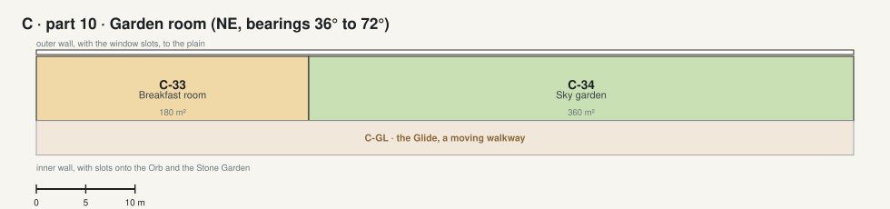

The Crown · part 10 · Garden room NE, bearings 36° to 72°

| Code | Room | What it is for | Also | Size | Two of a kind |
|---|---|---|---|---|---|
| C-33 | Breakfast room | Breakfast with the sunrise through the east slots. | Morning coffee with guests. | 180 m² | |
| C-34 | Sky garden | Herbs, flowers and small trees under the slots: a conservatory in the ring. | Fresh herbs for the chef's kitchen. | 360 m² |